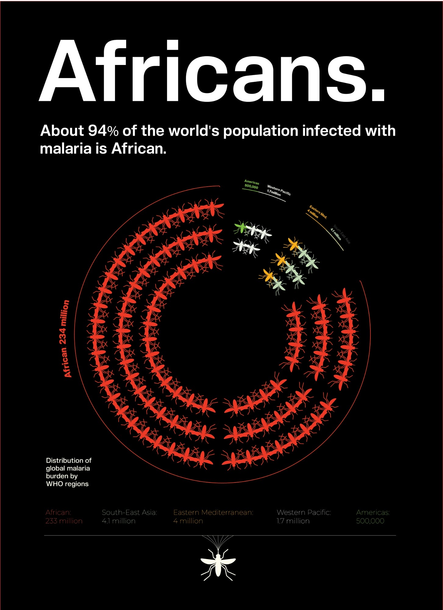
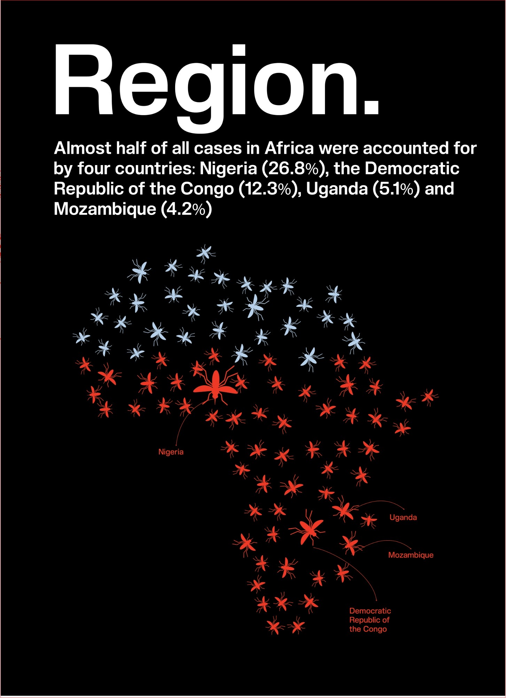
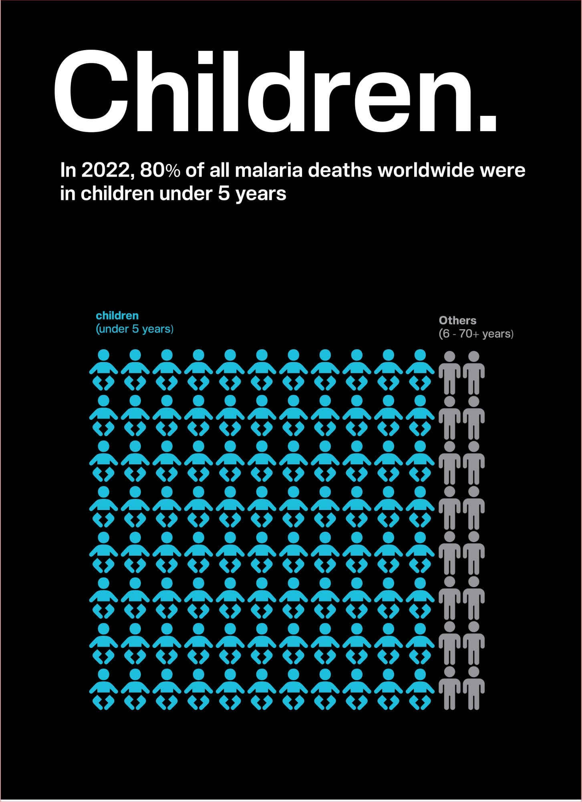
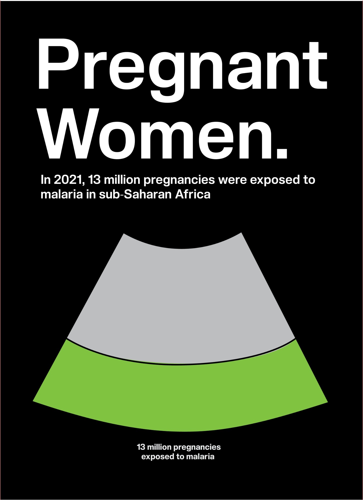
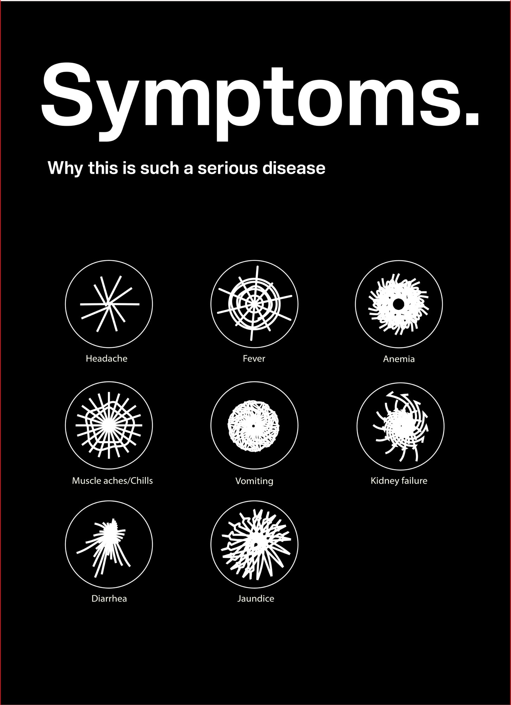
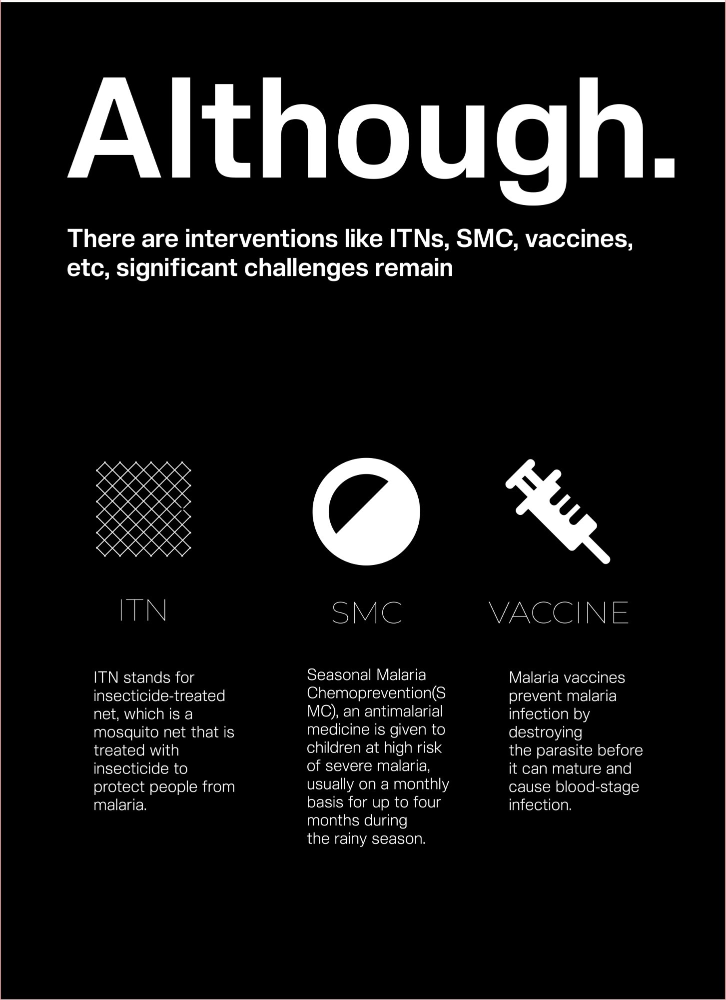
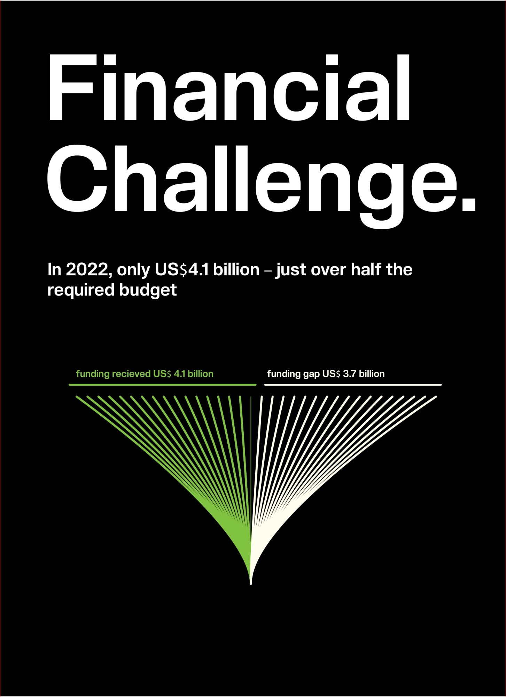
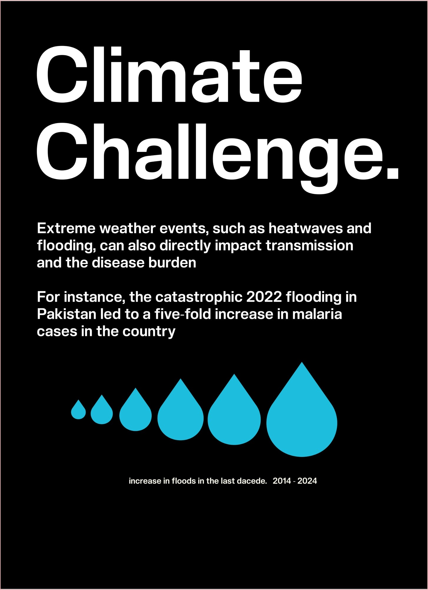
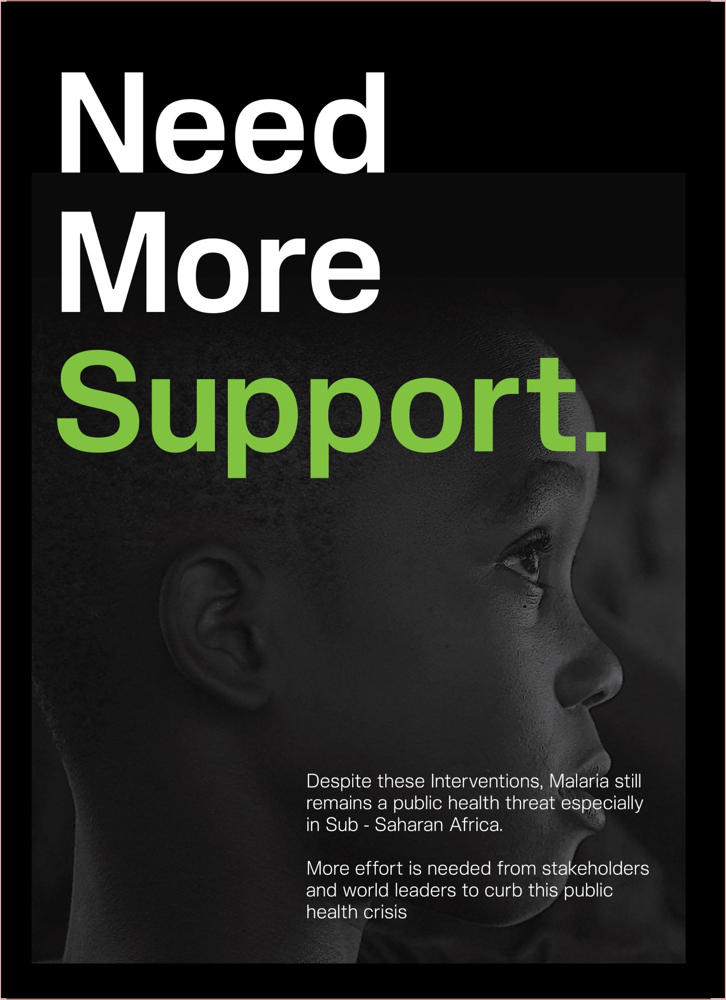

Information Design
A Nine-Poster Series on the Global Malaria Burden

Poster one — the whole argument in a single ring: 234 million mosquitoes against everyone else's fifteen
Nine posters on the global malaria burden, built on a single rule: one statistic per poster, one encoding designed for that statistic, and nothing else on the wall. No decorative chrome, no second chart competing for attention, no paragraph of context doing the work the picture should do.
The set is designed to be read standing up and in sequence. Each poster is a single word ending in a full stop — Africans. Region. Children. Pregnant Women. Symptoms. Although. Financial Challenge. Climate Challenge. Need More Support. — and the nine words, read in order, are the argument.
Malaria reporting has a scale problem. The headline figures are so large and so familiar that they have stopped landing: 249 million cases, 608,000 deaths, 94% of the burden in one WHO region. A reader nods and moves on. The number has been heard rather than understood.
The conventional response is a dashboard — several charts, a map, a legend, a block of explanatory text. That format assumes a seated reader who has chosen to study it. A poster has no such reader. It has someone walking past who will give it a few seconds standing up, and who will either take away one thing or nothing at all.
So the design question was not how do I show this data. It was: what is the single fact this poster is responsible for, and what shape makes that fact impossible to skim past?
I set three constraints before drawing anything, and held them across all nine:
Every poster follows the same skeleton, which is what lets them hang together across nine very different visual forms:
| Element | Rule |
|---|---|
| Headline | One word or short phrase, set very large in Helvetica Bold, always closed with a full stop. The stop is doing work — it makes each poster a statement rather than a label, and it gives the sequence its cadence. |
| Subhead | One sentence carrying the statistic in plain language. Never more than two lines. |
| Ground | Black on every poster. It removes the page, so the encoding reads as a figure floating in space rather than as a chart sitting in a frame. |
| Accent | A single hue per poster, chosen for the subject — red for burden, cyan for children and water, green for money and hope, white for clinical symptoms. |
| Encoding | One only. Built for that poster's number and used nowhere else in the set. |
The nine posters are an argument in three movements: who carries the burden, why it is severe, and why it is not being solved. Read in order they escalate from scale, to intimacy, to consequence, to a demand.


Africans · Region · Children — scale, then place, then age
Africans. The opening poster has to establish the asymmetry, and a bar chart would flatten it — one long bar and four stubs is a shape people have seen a thousand times. Instead the WHO regions are drawn as rings of mosquitoes, with the African region's 234 million sweeping around almost the full circle while the Americas' 500,000 amount to a single insect. The comparison is spatial rather than numerical: you feel the ring close before you read a figure.
Region. Having established the continent, the next poster narrows to four countries. The mosquitoes are arranged in the silhouette of Africa itself, red for the four countries carrying almost half the burden and pale blue for the rest, with Nigeria's share marked by a single oversized insect sitting where Nigeria sits. The map is made of the thing it is about.
Children. This is the poster where the series stops being about geography. An isotype grid of small figures, overwhelmingly children, with a thin column of adults at the edge. It is the most conventional encoding in the set, deliberately — after two abstract compositions the reader needs something they can count, and the countable thing should be the one that matters most.


Pregnant Women · Symptoms — the encoding borrows the form of the subject
Pregnant Women. The proportion of pregnancies exposed to malaria is drawn as an ultrasound cone, divided. It is the sharpest idea in the series: a part-to-whole chart whose outline is the clinical image every reader already associates with pregnancy, so the chart type carries meaning before any value is read.
Symptoms. Eight symptoms, eight generative glyphs inside eight circles — spikes for fever, a dense scribble for anaemia, a thin scatter for diarrhoea. There is no quantity here, which is the point: this is the one poster in the set that is qualitative, and giving it a visual language of its own keeps the reader from trying to read magnitude into it.



Although · Financial Challenge · Climate Challenge — the turn, the shortfall, the compounding factor
Although. The hinge of the series, and the only poster whose headline is a conjunction — it exists to turn the argument rather than to carry a number. Three interventions, three icons, three short definitions. Its job is to concede the good news so the next two posters land as something other than pessimism.
Financial Challenge. Funding received against the funding gap, drawn as two fans diverging from a single point. A stacked bar would have made the shortfall look like an accounting line. Splitting the fan from one origin makes it read as a fork in the road — the money that arrived and the money that did not, spreading apart.
Climate Challenge. Six droplets scaling up across a decade. The simplest encoding in the series and the most direct: rainfall drawn as rain, growing.

Need More Support — the only poster with a photograph, and the only one with no data
Need More Support. After eight posters of abstraction, the series ends on a face. No chart, no figure — a child in near-darkness with the single word Support in green, the same green the funding poster used for money that actually arrived.
This is the one deliberate rule-break in the set. Every preceding poster withholds the human image, because leading with a photograph of a sick African child is the oldest and laziest move in global health communication, and it invites pity rather than understanding. Earning that face over eight posters of evidence first changes what it asks for.
Two things I would tighten in a second edition, both of the same kind — places where the drawing and the label do not quite agree.